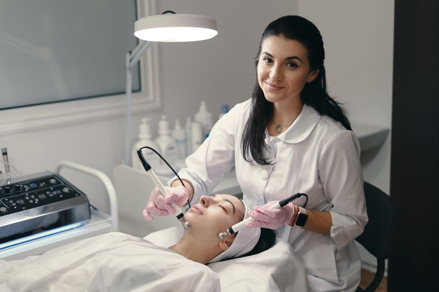

Diagnosis and Treatment
of Common Skin Conditions
At our dermatology clinic, we are dedicated to providing exceptional care in the diagnosis and treatment of common skin conditions. With a team of experienced dermatologists and specialized healthcare professionals, we offer comprehensive services tailored to meet the diverse needs of our patients. From the initial consultation, where we meticulously evaluate medical histories and conduct thorough skin examinations, to the precise diagnosis of conditions such as acne, eczema, psoriasis, and skin infections, our approach is thorough and compassionate. We utilize state-of-the-art diagnostic tools and techniques, including skin biopsies and allergy testing, to ensure accurate diagnoses. Our treatment plans are personalized, integrating advanced therapie and topical medications to effectively manage and alleviate symptoms. Whether addressing chronic conditions or acute flare-ups, our goal is to restore skin health, enhance appearance, and promote overall well-being.
Assessment and Treatment
of Rashes and Skin Diseases

Our dermatology clinic provides patients of all ages with professional care, specializing in the thorough evaluation and treatment of rashes and skin conditions. To precisely diagnose a wide range of dermatological diseases, we place a high priority on comprehensive evaluations that involve in-depth patient histories and exact physical examinations. Our team of dermatologists uses cutting-edge diagnostic techniques and equipment to treat and identify common rashes like hives, eczema, and contact dermatitis, as well as more complex skin conditions like psoriasis and autoimmune disorders. In order to successfully manage symptoms and improve long-term skin health, treatment programs are customized to each patient's specific needs and incorporate the most recent medicinal therapies, topical treatments, and lifestyle suggestions.
Early Identification
and Screening for Skin Cancer
At our dermatology clinic, we provide specialist services to diagnose and manage skin cancer, with an emphasis on early identification and screening for the potentially fatal condition. Modern technology and comprehensive skin examinations are used by our skilled dermatologists to find worrisome lesions, moles, or anomalies that might be signs of skin cancer. We stress the value of routine tests, particularly for those who are more susceptible because of things like pale skin, a family history of skin cancer, or a history of sun exposure. As part of our proactive care approach, we conduct biopsies and other diagnostic tests on patients as necessary to ensure a precise diagnosis. We also educate our patients on skin cancer preventive techniques. Our objective is to identify skin cancer early on, when treatment is most successful, guaranteeing the best possible results and fostering the long-term health and well-being of our patients.